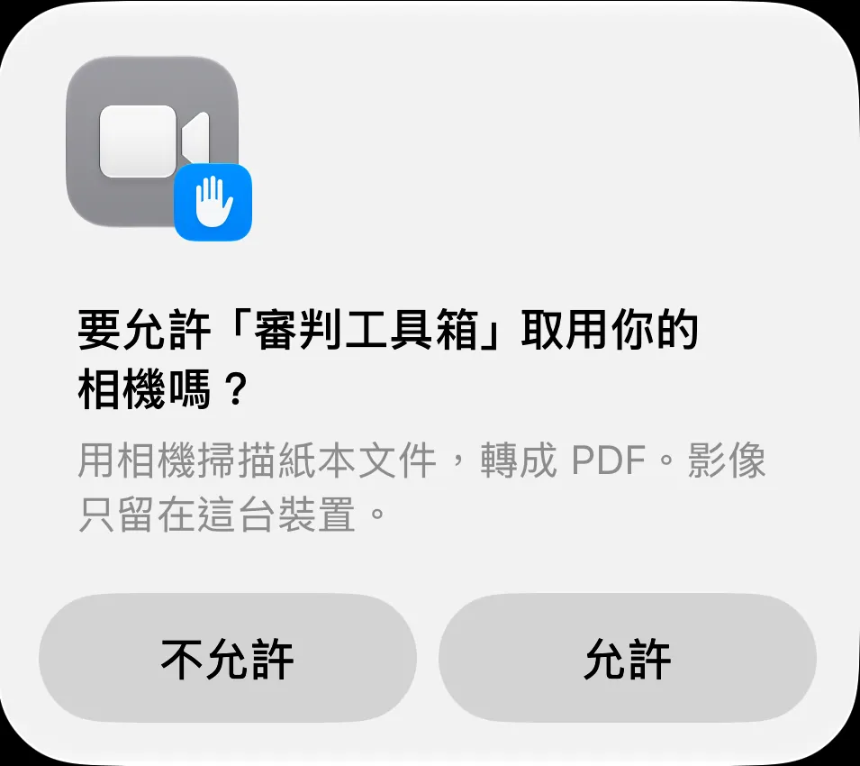
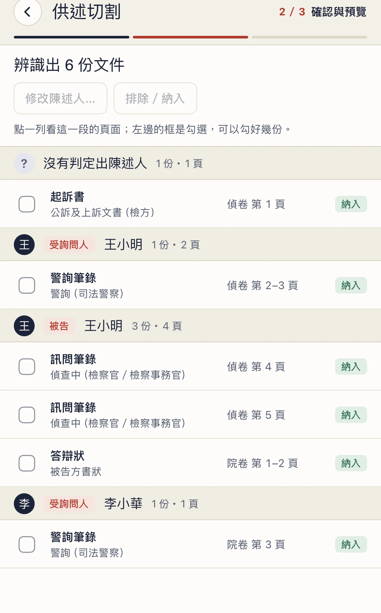
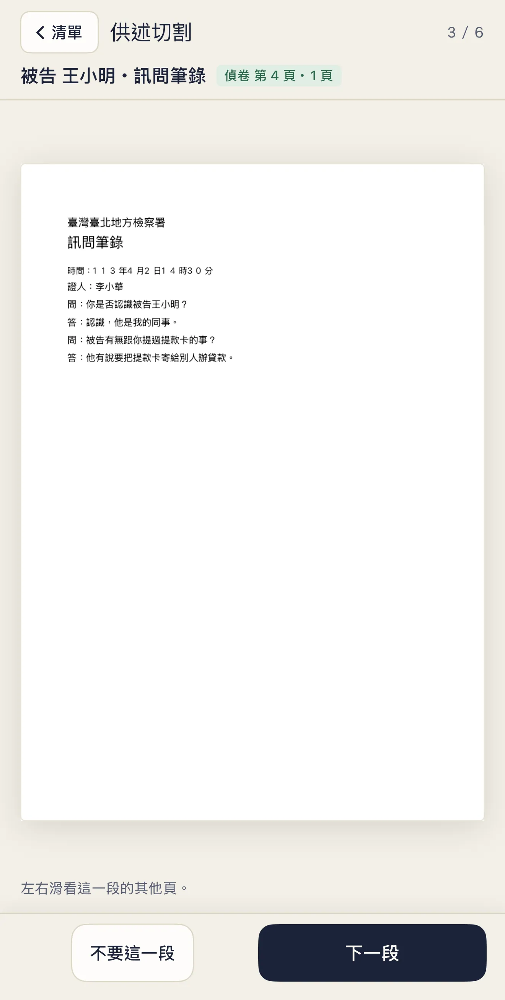
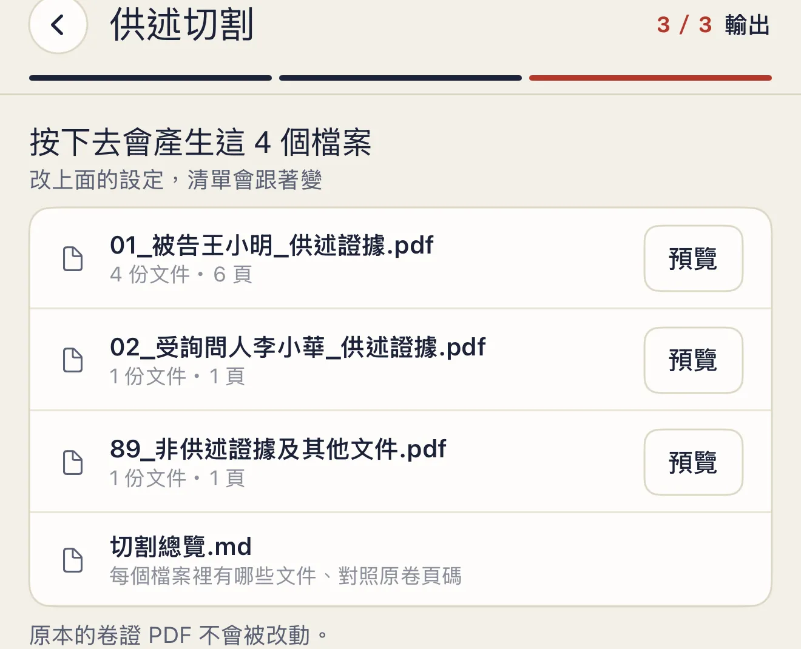
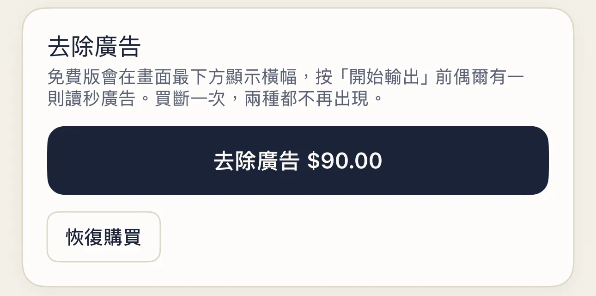
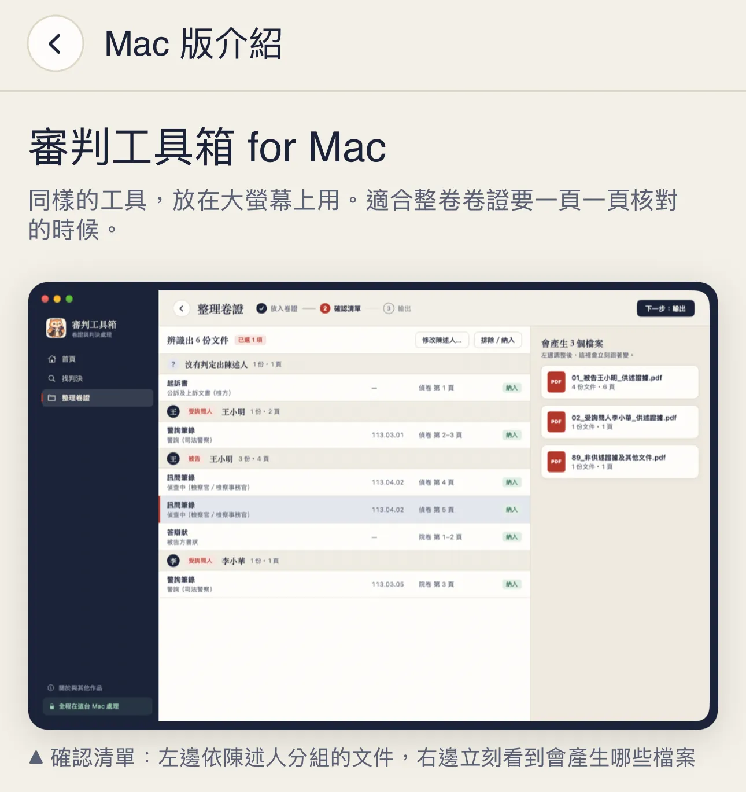

在手機與平板上整理卷證：iPhone・iPad 使用教學
iPhone・iPad 版有跟 Mac 版一樣的十三個工具，步驟也相同。這篇只寫手機與平板上不一樣的地方：檔案從哪裡放進來、按鈕在哪裡、輸出存到哪裡，以及 Mac 版沒有的相機掃描和廣告。各工具的詳細步驟請看各自的教學。
跟 Mac 版一樣的地方、不一樣的地方
iPhone 和 iPad 是同一個 App（iOS／iPadOS 17 以上）。跟 Mac 版一樣的地方：
- 十三個工具都有，分組、步驟、選項、輸出的檔名都相同。
- 卷證只在這台裝置上讀取和處理，不會上傳。判決下載會連到司法院的裁判書查詢網站。
- 有開啟密碼的 PDF 放進來時就地問密碼，密碼只留在記憶體。
不一樣的地方：
- 多了用相機掃描文件。
- 檔案從「檔案」App 選，輸出也存在「檔案」App 裡。
- iPhone 的主要按鈕在畫面下方；清單點一列是整頁預覽，不是左右並排。
- 免費，有廣告，可以在「關於」一次付費去除。
- 沒有「交給 AI」，那是 Mac 版才有的功能。
Mac 版是另一個 App，要另外購買。兩邊的資料（最近的工作、搜尋資料）各自留在自己的裝置上，不會同步。
首頁
iPhone 的首頁最上面是「用相機掃描文件」，下面是四組工具，每個工具一列，附一句說明。點一列就進到那個工具。最下面一列是「關於・Mac 版介紹・去除廣告」。

iPad 的首頁跟 Mac 一樣是四組卡片，「用相機掃描文件」在右上角。側邊欄收起來的時候（見iPad 的版面），「關於」也在右上角。
放入 PDF：從「檔案」App
進到工具的第一步，按「選擇 PDF」（讀卷工具是「選擇卷證 PDF」，圖片轉 PDF 是「選擇圖片」），從「檔案」App 選。之後要再加，按「再加一份」。
也可以反過來，在「檔案」App 裡用審判工具箱打開 PDF。正在用一個能收 PDF 的工具時，PDF 會直接放進那個工具；不然會先問「要用哪個工具」。
放進來之後的步驟跟 Mac 相同，例如讀卷工具的卷宗簡稱、頁碼偏移，掃描頁會自動辨識文字。
用相機掃描文件
按首頁的「用相機掃描文件」。第一次會問能不能用相機，按「允許」。

對準紙本拍下，系統會自動找紙張邊緣、拉正。拍好之後，App 把它存成一份 PDF，顯示「掃描好了，N 頁」，並問「接著用其他工具處理？」。

點一個工具，就把剛掃好的 PDF 放進那個工具，從第一步接著做：可搜尋 PDF、書籤形成、頁面整理、頁碼與浮水印、證物冊、密碼。掃描出來的是圖片，要找得到字，先做成「可搜尋 PDF」。這個流程在 iPhone 實機上試過（掃描一頁、接到頁面整理、輸出）。
掃好的 PDF 存在「檔案 › 我的 iPhone（iPad）› 審判工具箱」裡的「掃描 月日-時分」資料夾。掃描的設定與做法在圖片與掃描那篇。
iPhone 上的操作
- 主要按鈕在畫面下方，例如「開始分析」「下一步：輸出」「開始輸出 N 個檔案」。按鈕不能按時，上面一行寫原因。左上角的返回鍵回到上一步。
- 點一列看整頁：確認與預覽的清單，點一列會推進那一段的整頁預覽，左右滑看這一段的其他頁。不要的按「不要這一段」，看完按「下一段」，按左上的「清單」回去。
- 勾選用左邊的框：要對好幾份一起做（例如排除），勾每列左邊的框，再按清單上方的按鈕。
清單

點一列之後

頁面整理的動作收在畫面下方一列（旋轉、刪除、拆開、空白頁、加一份、復原），點縮圖就加選或取消那一頁。全文搜尋打字時，結果清單縮在鍵盤上方，點一筆推進那一頁。
輸出的檔案在哪裡
輸出這一步一樣先列出會產生的檔案，有「預覽」的可以先打開看。改上面的設定，清單跟著變。

按畫面下方的「開始輸出 N 個檔案」。檔案存在「檔案」App 的「我的 iPhone › 審判工具箱」（iPad 是「我的 iPad › 審判工具箱」），每次輸出開一個新資料夾，不會蓋掉之前的結果，原本的 PDF 不會被改動。
iPad 的版面
iPad 依視窗的寬度換版面：
- 視窗夠寬時（例如橫向全螢幕），跟 Mac 一樣是左邊工具側欄、右邊內容，主要按鈕在右上角，清單和頁面左右並排。
- 寬度不夠放側欄時（例如 13 吋直向），收起側欄，內容仍是左右並排；首頁右上角多一個「關於」。
- 再窄一些（例如分割畫面），變成跟 iPhone 一樣的版面，主要按鈕移到畫面下方。

iPad 四個方向都可以用，也可以分割畫面。
廣告與去除廣告
iPhone・iPad 版免費，十三個工具都能用，沒有次數限制。免費版有兩種廣告：
- 橫幅：在畫面最下方，不蓋住按鈕。
- 讀秒廣告：按「開始輸出」時偶爾出現一則，關掉之後才開始輸出。同一次開啟 App，最多每 3 分鐘一次。確認清單、預覽、搜尋、掃描的過程不會跳廣告。
第一次打開時會問是否允許追蹤。允許的話，廣告會跟你比較相關；不允許也能照常使用所有功能。卷證與判決的內容不會用在廣告上。
不想看廣告，到「關於」（iPhone 在首頁最下面）按「去除廣告」，一次付費（台灣區 NT$90，按鈕上顯示 App Store 回傳的價格），橫幅與讀秒廣告都不再出現，也不再連到廣告服務。

換了裝置或重新安裝，用同一個 Apple 帳號，在同一個地方按「恢復購買」。iPhone 和 iPad 是同一個 App，在另一台用同一個 Apple 帳號恢復購買即可；Mac 版是另一個 App，本來就沒有廣告。
Mac 版介紹
「關於」裡的「Mac 版介紹」說明 Mac 版的差別：同樣的工具放在大螢幕上，整卷核對時清單和頁面並排，另外多了「交給 AI」（複製一段指示，貼到你用的 AI 工具，請它整理輸出的檔案；App 本身不會連到任何 AI）。

Mac 版名稱是「審判工具箱 for Mac」，在 Mac App Store 一次買斷，沒有廣告。「交給 AI」的用法在交給 AI 教學。
做不到的事／要注意
- 沒有「交給 AI」，只有 Mac 版才有。
- 掃描頁的文字辨識每頁要幾秒。幾百頁以上的掃描卷，建議在 Mac 上處理；手機適合小份文件和臨時掃描。
- 手機和 Mac 之間不會同步，最近的工作、全文搜尋的搜尋資料各自留在自己的裝置上。
- 介面只有繁體中文，只在台灣的 App Store 上架。
- 相機掃描需要裝置有相機；沒有的話按鈕會變淡，寫著「這台裝置沒有可以用的相機，不能掃描。」
從頭開始看：第一次使用。iPhone・iPad 版的畫面也在iPhone・iPad 介紹頁。
常見問題
iPhone 版輸出的檔案在哪裡？
在「檔案」App 的「我的 iPhone › 審判工具箱」（iPad 是「我的 iPad › 審判工具箱」），每次輸出開一個新資料夾。輸出完成時按「在『檔案』顯示」也能打開。
去除廣告之後，換手機要再買一次嗎？
不用。用同一個 Apple 帳號，在「關於」按「恢復購買」。iPhone 和 iPad 是同一個 App；Mac 版是另一個 App，要另外購買。
不允許追蹤，可以用全部功能嗎？
可以。不允許只影響廣告是否跟你比較相關，十三個工具都照常能用。卷證與判決的內容不會用在廣告上。
iPhone 版有「交給 AI」嗎？
沒有，「交給 AI」只有 Mac 版。iPhone・iPad 版的十三個工具與 Mac 版相同。